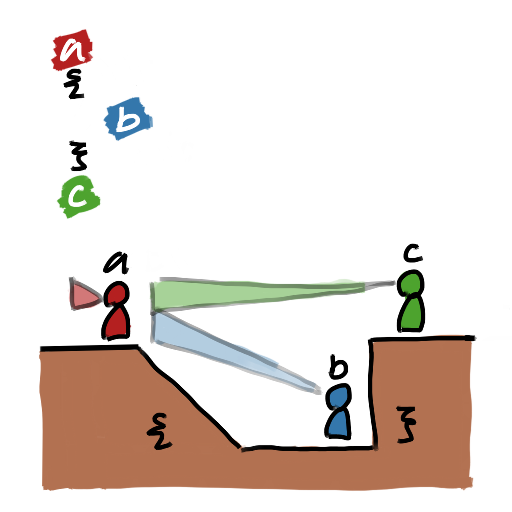
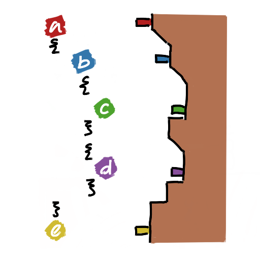

Scope ğŸ”#
Scopes are areas where a variable are visible and can be used.
From the programs you’ve made so far, you may notice your code is enclosed in two curly-braces ({}). In C, curly brackets create a block. Each block has it’s own scope.
Variables declared above a block are accessible within in the block. However variables declared inside the block are destoryed when the block ends. This means code after the block cannot access variables declared inside the block.
Slopes and Cliffs Analogy ⛰️#
{kind=link}
In the example image above, imagine variables as people facing left and blocks as different levels in the ground, with a smooth slope on the left-side. We’ll name the people Anne, Blake, and Charles (corresponding to a, b, & c).
Anne and Charles are inside of the same block, therefore they are on the same level. Blake is inside of a block that’s nested inside of Anne and Charles’ block, therefore Blake’s block is a level below the others.
Blake, who’s inside the hole, can only see Anne, the person behind Blake. However Charles, whose on the same level as Anne, cannot see Blake, because Charles is ahead of Blake.
{kind=link}
Here’s a larger example — Just picture the open bracket as moving down a slope, while the closing bracket moved up a cliff.
Examples#
Here are some examples of scopes in action.
Good
{
int variable_a = 10;
{
// Valid code, because variable_a is declared
// outside of and before this block.
int variable_b = variable_a;
printf("variable_a is %d", variable_a);
}
}
Bad
{
int variable_a = 10;
{
int variable_b = 5;
}
// Invalid code because variable_b was declared in the
// previous block and doesn't exist anymore after that
// block ended!
variable_a = variable_b;
printf("variable_b is %d", variable_b);
}
Tasks 🎯#
Is the following section of code valid?
{ int a = 1; { int b = 5; { int c = 10; } } c = b; }
Solution ✅
The code is not valid, because you cannot access c outside of the block it was declared in.